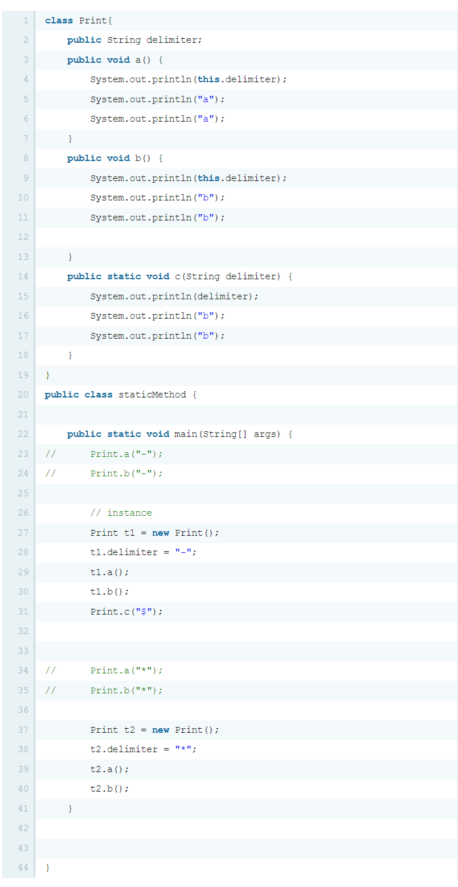

JAVA method
JAVA method-첫째 날[21.01.07]
진도: ~부록2-static까지
진도가 밀리게 된 이유
:원래 JAVA-제어문부터 JAVA-상속까지 하루에 하나 들어서 끝내려고 했다. 그래서 계획대로라면 오늘이 JAVA-상속까지 다 끝내는 날인데... 왜 이렇게 됐냐면 21년 1월 5일 낮에 어김없이 전날에 공부했던 JAVA를 정리하면서 커피 한 잔을 책상에 올려놓고 거실에 나갔다. 그런데 하필이면 책상에 있던 거울이 그 앞에 있는 커피 잔을 치고 그 커피 잔이 쏟아지면서 내 전 노트북은 사망하게 되었다. 커피를 흘리자마자 바로 삼성 서비스 센터로 들고 뛰었지만 바로 부식되어버린 바람에 수리비만 80만원. 수리를 한다 해도 제 성능을 다 하지 못할 거란 말에 눈물을 머금고 새 노트북을 구매하게 되었다. 야발. 그래서 그 노트북이 배송 오기까지 공부는 할 수 없었고 7일인 오늘, 드디어 노트북이 하얀 눈을 헤치고 나에게 와서 기본적인 세팅(Python Idle과 각종 모듈들, Visual Studio, JAVA와 경로 설정, eclipse,atom 등)을 하고 나서야 비로소 공부를 시작하게 되었다. 그래도 그 전 노트북에 있던 자료들을 구할 수 있어서 얼마나 다행인지 모르겠다. 그래도 새 노트북을 샀다는 거에 긍정적으로 생각하려고 한다. 씨잉,,,, ^^^
자바 메소드, 함수 선언 또한 C언어와 유사하다
public static [리턴할 데이터타입] [메소드 명]([파라미터의 데이터 타입과 변수명])
ex) public static String PrintA(int t1, String k)
전역 변수는 void main(String[] args)밖에 public static을 붙여서 선언해주면 된다.
refactor
eclipse에서 제공하는 기능 중에 내가 원하는 부분을 드래그 해서 바로 method로 묶어주는 간편한 것이 있다.
접근 제어자-"외부에서 접근할 수 있는 레벨을 지정하는 것"
- public
- protected
- default:생략하는 것
- private: 같은 클래스 내에서만 메소드 사용할 수 있도록 제한
static의 의미
static에 붙은 메소드는 class의 메소드이고, static이 붙지 않은 메소드는 instance의 메소드다.

class Print에 속해있는 세 가지 메소드 중 public void a, public void b와 같은 메소드들은 밑의 main에서 new Print()로 새롭게 정의된 인스턴스의 메소드다. 그래서 각 변수 t1,t2의 이름과 함께 t1.a(), t1.b(), t2.a(), t2.b()으로 부른다.또한 this라는 것을 사용해 표현한다.(OOP 파트에서 자세하게 배울 것이다.) 반면 publid static void c와 같이 static이 붙은 메소드는 class Print 자체에 속한 메소드이기 때문에 아래의 main에서도 Print.c라고 불리는 것을 알 수 있다.